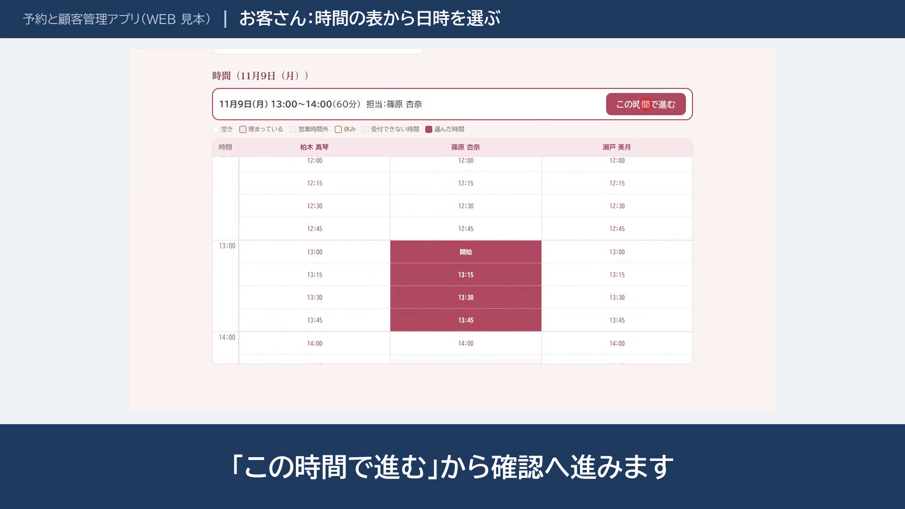
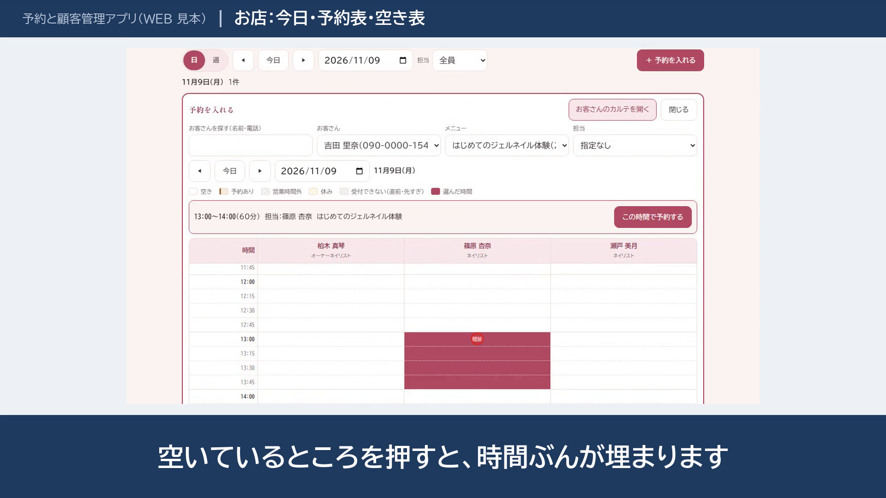

電話・LINE・メモの予約の、二重の受付を防ぎたい。予約アプリでの考え方（サロン・教室の例）
予約が、電話・LINE・ノートのメモに散らばっていると、二重予約や聞き忘れが心配になります。夜や休みの日に来た予約には、翌日まで返事ができません。お客さんのメモや来店の履歴は、台帳のどこかにあって、探しにくい。
この記事では、二重の受付をどう防ぐかを、WEB アプリの見本（架空のネイルサロンと料理教室）を例に説明します。見本のデータはすべて架空です。
なぜ二重予約が起きるのか
二重予約の多くは、予約の取り方が複数あることから起きます。電話で受けた予約を台帳に書く前に、LINE で同じ時間の予約が入る。台帳を見たときは空いていたので、受けてしまう。1人で受けているお店でも、起きることがあります。
予約の窓口を1つにして、空いている時間だけを選べるようにすれば、この種の二重予約は減ります。
画面で止めるだけでは、足りない
「その時間は取れません」と、画面で知らせる仕組みは、よくあります。ただ、画面で止めるだけだと、2人が同時にボタンを押したときに、両方通ってしまうことがあります。
見本では、次の2つを、データベースの側で守っています。
- 同じ担当者の時間の重なり
- 教室の定員（1回の枠に入れる人数）
画面は、その結果を表示するだけです。画面の動きに頼らないので、同時に押されても、重なった予約は入りません。
見られては困るお店のメモが、お客さんの画面に届かないようにするのも、同じ考え方です。「見せない」のではなく、そもそも届かないようにします。
予約の「変更」は、新しい枠を先に取る
予約の日時を変えるとき、先に元の予約を消してしまうと、新しい枠が取れなかったときに、お客さんの予約が消えてしまいます。
そこで、見本では順番を決めています。
- 新しい枠を先に確保する
- 取れたときだけ、元の予約を空ける
- 取れなければ、元の予約はそのまま残る
小さなことですが、実際に使われると、この順番の違いがトラブルを分けます。
ほかに作ったもの
見本では、お客さん側とお店側の画面を、上の切り替えで行き来できます。

お客さん側
- メニューを選ぶと、月のカレンダーが出る。空きのある日だけが押せる
- 日にちを選ぶと、時間の表が出る。縦が時間（15分刻み）、横が担当者で、空いているセルを押す
- 予約の変更とキャンセルが、自分でできる
- 体験プランは、同じ電話番号またはメールの人は1回だけ
お店側
- 今日の予約と、予約表（日・週）
- 電話で受けた予約を、空き表を見ながら登録できる
- 来店済み・無断欠席を記録し、お客さんのカルテの履歴に残す。お店だけが見るメモも残せる
- 前回の来店から日が経ったお客さんの一覧と、連絡の文の作成

メニューや教室の開催日、担当者は、お店の人が自分で足したり直したりできます。スマホの画面もあり、ホーム画面に入れて、アプリのように使うこともできます。
どれくらい手間が減るか
スタッフ2人で、予約が月120件のお店を想定します。予約の受け付け（電話・LINE の往復と、台帳への書き写し）に1件5分かかるとすると、年に約120時間です。日時の変更やキャンセルの電話が月20件で1件10分なら、年に約40時間です（架空のお店の想定での試算です。件数はお店ごとに変わります）。
数字のほかに、夜や休みの日の予約を、翌日まで待たせずに受けられるのも、大きな違いだと考えています。
どんなときに向くか
- 予約がある程度の件数あって、二重予約を確実に防ぎたい
- お客さんに空きを見せて、自分で予約してもらいたい
- お店のメモは、お客さんには見せたくない
- お客さんのカルテと来店の履歴を、予約と一緒に管理したい
反対に、予約が月に数件で、お店の人が管理するだけなら、スプレッドシートや、すでにある予約サービスのほうが、安く早く入ります。その場合は、そちらをおすすめします。
相談するには
見本は、ブラウザですぐ試せます。実績のページから、動画と画面を見られます。今の予約の取り方を、わかる範囲でお知らせください。
この困りごとの見本
W02 予約と顧客管理アプリ（動画・画面つき。実績のページで見られます）